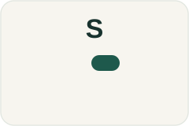

نشأة الشفرة واختراعها
ظهرت فكرة شفرة مورس في ثلاثينيات القرن التاسع عشر ضمن تطوير التلغراف الكهربائي. ابتكر سامويل مورس الجهاز، وعمل مع ألفريد فايل على تصميم نظام الإرسال، وطور فريتز برس نظام الرموز الذي أصبح أساس «مورس الأمريكي» و«مورس الدولي» المعروف لاحقًا.
اعتمد النظام المبكر على أرقام مرتبطة بعناصر الكلمات داخل دفتر ترميز، ثم حلت الرموز الأبجدية والرقمية محل هذا الأسلوب تدريجيًا بعد إدراك أن رموزًا مباشرة للحروف أسرع وأكثر عملية.
لماذا سُميت باسم مورس؟
نسبت الشفرة إلى مخترع التلغراف سامويل فينش مورس، الذي عرض عام 1844 اتصالًا تلغرافيًا بين واشنطن وبالتيمور. كانت التجربة العملية الأولى مصدر شهرة واسعة وأثبتت أن الإشارات الكهربائية تستطيع نقل الرسائل عبر مسافات بعيدة وبسرعة لم تكن معروفة آنذاك.

مورس الأمريكي ومورس الدولي
استخدمت أنظمة مورس الأولية ترميزات مختلفة للطول والمسافة، ثم استقر النظام الدولي على تعاريف موحدة للحروف والأرقام والفواصل. اليوم تُعد هذه النسخة الدولية هي الأكثر انتشارًا، وتستخدم نقطة قصيرة وشرطة تعادل ثلاث نقاط، مع مسافة بين عناصر الحرف ومسافة أطول بين الحروف والكلمات.
استخدامها عبر التاريخ
دخلت مورس السكك الحديدية والبحرية والجيش والشرطة ووسائل الطيران المبكرة. كانت الوسيلة الأساسية لإرسال برقيات الأخبار، وإدارة القطارات، والاتصال بين السفن والشواطئ. وفي الحرب العالمية الثانية استخدمها المشغلون العسكريون، بينما ما زالت جهات الطوارئ والبحرية وتطبيقات الراديو الهواة تعتمدها.
أشهر إشارة تاريخية هي SOS، الممثلة بـ ··· --- ···. لم تكن الكلمة اختصارًا إنجليزيًا أصلًا، بل اختيرت لإشارتها المميزة وسهولة إرسالها واستقبالها، خصوصًا في حالات الطوارئ.
أسلوب الإرسال والاستقبال
يُرسل الحرف بعد تجميع نقاطه وشرائطه، وتترك مسافة قصيرة بين الحروف ومسافة أطول بين الكلمات. يمكن تنفيذ الإشارة بمفتاح تلغرافي، أو وميض ضوئي، أو صفارة، أو صوت راديو، أو حتى غمزات ضوئية. هذه المرونة جعلت الشفرة مفيدة في كل مكان ينجح فيه إرسال نبضة سمعية أو ضوئية أو كهربائية.
تقاس السرعة بوحدة «الكلِمة في الدقيقة»، وقد تستخدم ألحانًا ثابتة لتدريب الأذن على التعرف السريع، مثل نمط المجموعات بدل قراءة الرموز بصريًا حرفًا حرفًا.
مكانتها اليوم
رغم تحول الاتصالات إلى الإنترنت والهاتف والأقمار الصناعية، ما زالت مورس تحظى بقيمة علمية وتعليمية وهواة راديو عالية. إنها تخبرنا كيف نضبط الإشارة والضجيج والنقل، وتبقى مهارة سلامة مفيدة لدى طواقم البحر والطيران والرحلات البرية.